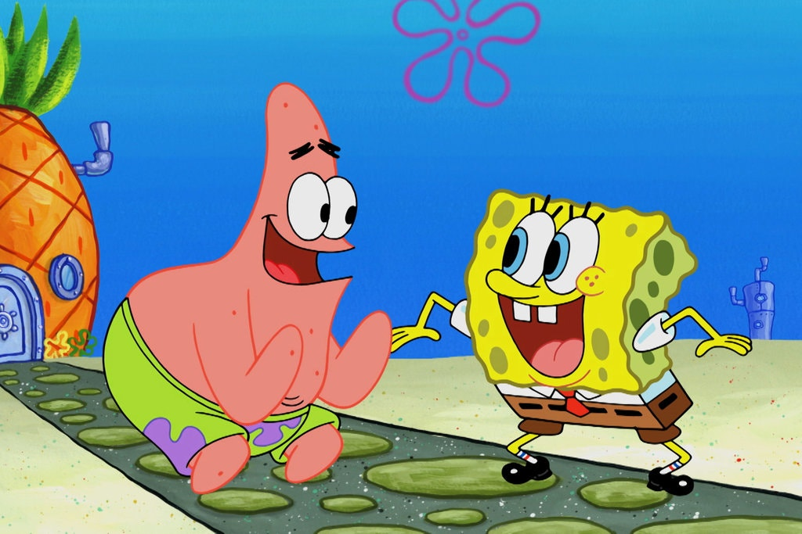

About SpongeBob
Spongebob is amazing. He lives in Bikini Bottom and gets up to lots of adventures with his friends.
Spongebob and Patrick
Spongebobs Characteristics
- He's got a big heart
- He has loads of friends
- He's the best chef the Krusty Krab has ever seen
Spongebob's Friends
Spongebob has awesome friends who live with him in Bikini Bottom. Patrick and Gary are his BFFs. Click on the links below to read more about them: